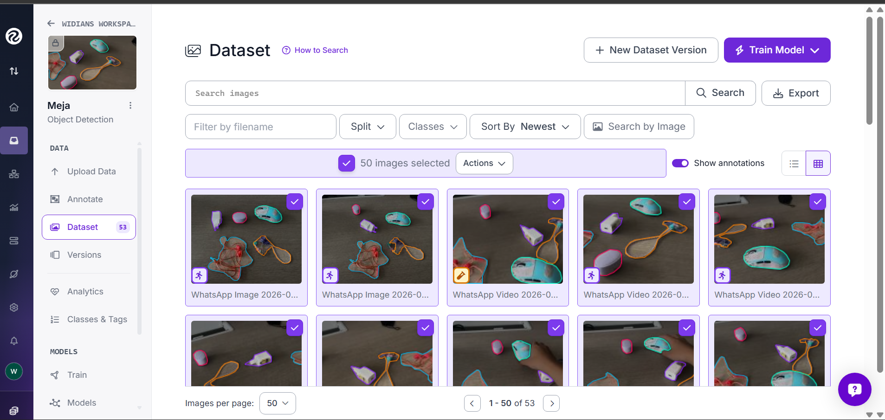
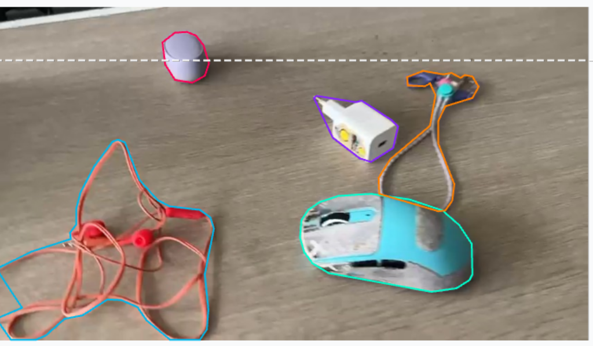
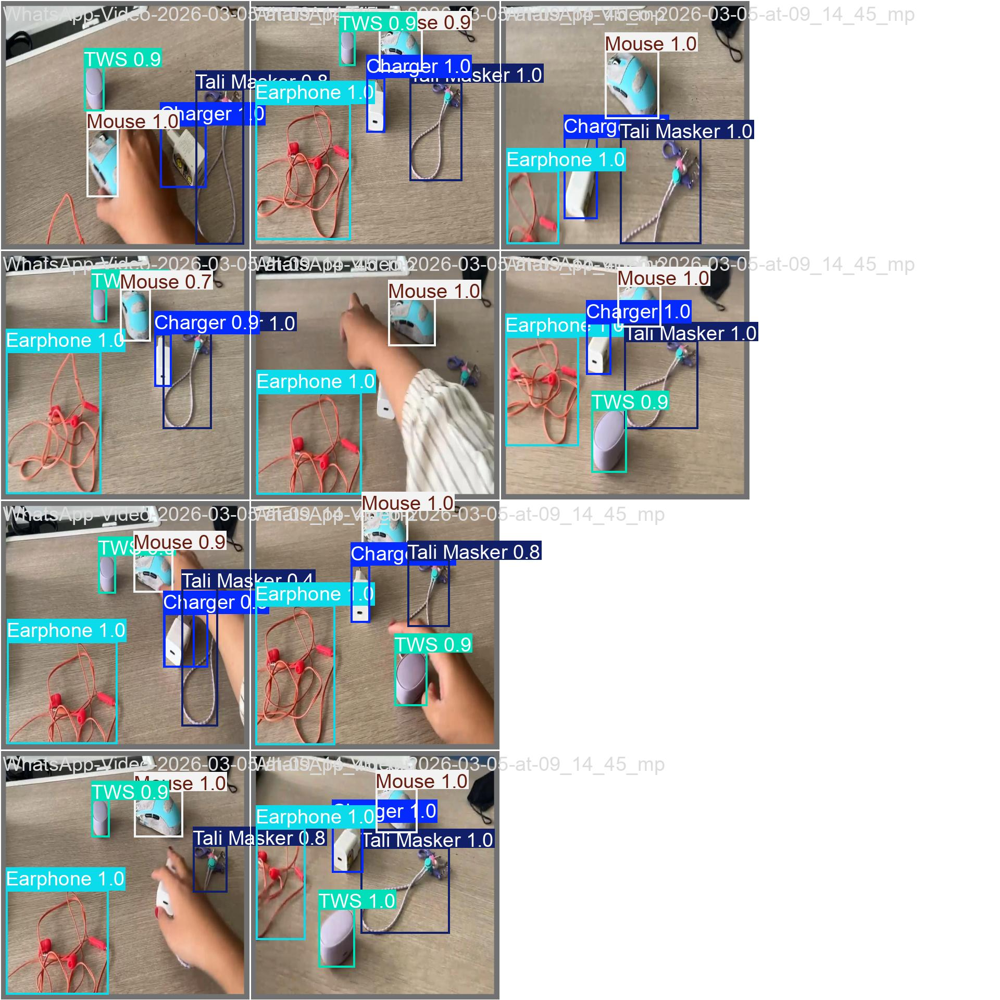

Workspace Object Detection
"High-precision object detection system developed with limited data (<60 samples), utilizing aggressive data augmentation and transfer learning to achieve >0.9 mAP on edge devices."
Project Overview
This project demonstrates an end-to-end Computer Vision pipeline designed to detect common workspace objects (Mouse, Charger, Earphone, Mask, Laptop) in real time.
The primary challenge was to build a robust model using a sparse dataset while maintaining high accuracy on difficult objects like thin cables and occluded items. This project highlights the importance of high-quality data annotation and data engineering in modern AI development.
Demo

(Real-time inference running on standard CPU)
Tech Stack & Tools
- Model Architecture: YOLOv8 Nano (Ultralytics) - Chosen for real-time inference speed.
- Data Annotation: Roboflow & LabelImg.
- Training Environment: Google Colab (Tesla T4 GPU).
- Language: Python.
- Evaluation: Confusion Matrix, mAP@50 curves.
Data Strategy
1. Precision Annotation
Manual annotation was performed with strict guidelines to ensure pixel-perfect bounding boxes, critical for reducing False Positives.
- Occlusion Handling: Labeled visible parts of objects obscured by hands or other items.
- Tight Bounding Boxes: Minimized background noise within labels to improve feature extraction efficiency.

2. Augmentation Pipeline
To combat the small dataset size (initial 50 images), I implemented a synthetic data generation pipeline using Roboflow:
- Horizontal Flip: To generalize object orientation.
- Rotation (±15°): To simulate varying camera angles.
- Brightness Adjustment: To ensure model robustness across different lighting conditions (Day/Night simulation).
- Result: Dataset expanded 3x (approx. 150 images) for training.
Performance Results
Despite the limited data, the model achieved exceptional performance, proving the effectiveness of the data strategy.
Confusion Matrix

Key Insights:
- 100% Accuracy on Rigid Objects: The model perfectly identified
MouseandTWS Casewith zero misclassifications. - High Recall on Deformable Objects:
EarphonesandMask Strapswere detected with >90% accuracy, a challenging feat for computer vision due to their thin structure. - Low False Positives: The model effectively distinguishes between similar white objects (e.g., Charger vs. Earphone case).